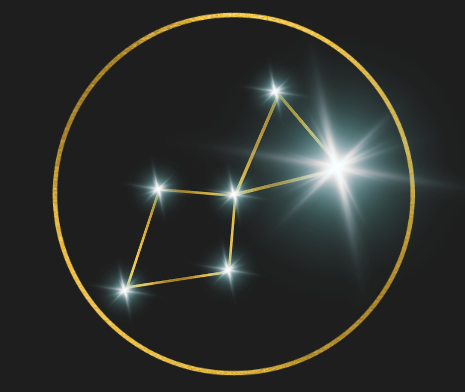

作品を作る
タイトル、ジャンル、世界観、テーマ、章と話を整理して作品全体を管理します。
Manga Creation
Lyra は、作品設定・キャラクター・話の流れを整理しながら、 ページ骨格と漫画画像を生成できる制作支援ツールです。 プロンプトを書くより、作品の中身を整理して漫画化することに集中できます。

Lyra
Development by Edge of Vision
Workflow
タイトル、ジャンル、世界観、テーマ、章と話を整理して作品全体を管理します。
現在の話と他の章の内容を踏まえて、矛盾を抑えながらストーリーを改善します。テキスト AI はクレジットを消費しません。
名前、自由記述、見た目、別名、再現アンカーを設定し、ページ生成で使うリファレンス画像を確定します。
話の内容をページ数へ分散し、各ページの目的、コマ数、連続性メモ、セリフのたたき台をまとめます。
登場人物、構図、ショット、アングル、背景、セリフをページ単位で調整してから生成に進みます。
現在の設定から新規に漫画ページを生成します。生成後は拡大確認し、必要に応じて再生成できます。
Use Case
Pricing
| 区分 | 内容 | 価格 |
|---|---|---|
| 無料お試し | 初回 12 クレジット | 0 円 |
| Standard | 50 クレジット/月 | 1,000 円/月 |
| Premium | 175 クレジット/月 | 3,500 円/月 |
| 単発 10cr | 10 クレジット | 220 円 |
| 単発 50cr | 50 クレジット | 1,100 円 |
| 単発 150cr | 150 クレジット | 3,300 円 |
| 操作 | 消費 |
|---|---|
| StoryAI / テキスト改善 | 0 cr |
| ページ骨格生成 | 0 cr |
| キャラ画像取り込み | 1 cr |
| キャラプレビュー生成 | 1 cr |
| ページ画像生成 | 3 cr から |
| 参照キャラ 4 体目以降 | 1 体ごとに +1 cr |
料金・クレジット消費はリリース時点の想定です。変更する場合があります。
Shots
制作コンソール全体。左に作品 / ストーリー、中央に編集画面、右にジョブやクレジットが見える構図。
推奨: hero-console-ja.png
分割入力または全体入力の切替、StoryAI 指示欄、改善結果が見える状態。
推奨: story-ai-improve-ja.png
名前、自由記述、GUI 項目、別名、再現アンカーが見える状態。
推奨: character-editor-ja.png
生成プレビューと確定済みリファレンス画像が並んで見える状態。
推奨: character-reference-confirm-ja.png
複数ページと各コマの状況、登場人物、構図、セリフが自動入力されている状態。
推奨: page-plan-generated-ja.png
登場人物、構図、ショット、アングル、背景、セリフを調整している状態。
推奨: panel-editor-ja.png
完成に近い漫画ページ 1 枚。セリフが読めて、ページ全体が見えるもの。
推奨: generated-page-sample-01.png
PDF / 画像、選択保存 / 一括保存の UI が見える状態。
推奨: export-dialog-ja.png
残高、購入導線、サブスク / 単発購入導線が分かる状態。
推奨: billing-credits-ja.png
FAQ
はい。キャラクター設定やストーリーを入力して、AI と一緒に漫画ページを作れます。ただし、良い結果にするにはキャラ設定やコマ内容の確認・修正が必要です。
基本的には不要です。Lyra は GUI 入力、ストーリー、キャラリファレンスから内部プロンプトを組み立てます。必要な場合だけ自由記述で補足できます。
確定済みリファレンス画像を使って安定性を高めます。ただし AI 生成の性質上、完全に同一になることは保証しません。
画像生成は時間がかかる処理です。混雑状況やページ内容によって、数十秒から数分かかる場合があります。
はい。選択ページまたは全ページを、PDF または画像形式で保存できます。